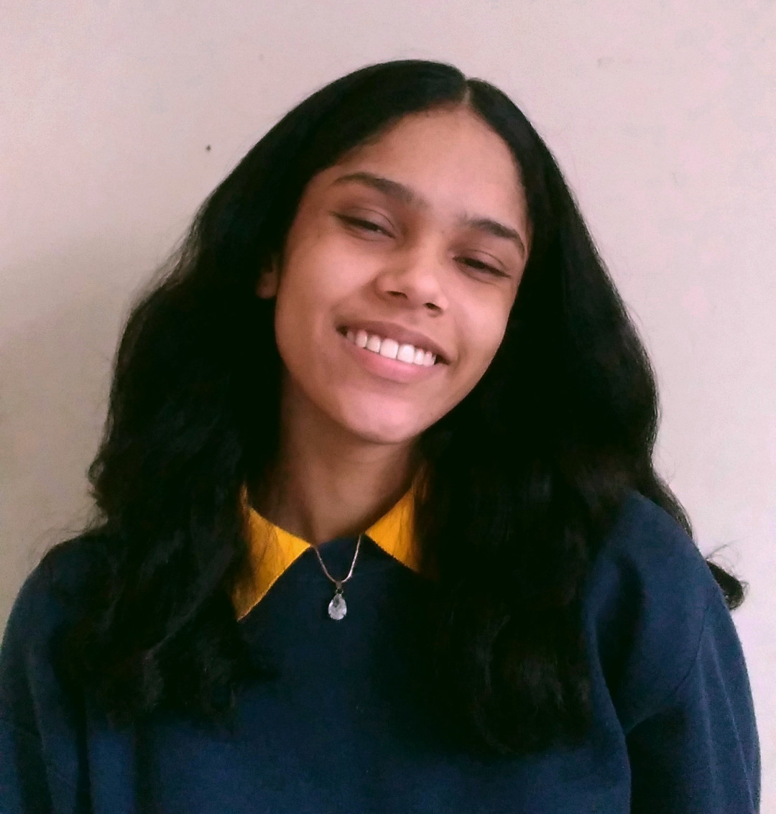

Currículo
Priscila Falcão dos Santos
Competências
- Comunicação;
- Rapidez de aprendizagem;
- Organização;
- Lidar bem com pressão e datas limites;
- Disciplinada;
- Domínio da escrita.
Experiência
abril de 2018 - agosto de 2018
Escola pública municipal, Jardim Camburi - Estagiária
Durante 2 meses não consecutivos
Aulas particulares de matemática e português para duas alunas do 8º ano do fundamental.
Formação
fevereiro de 2018 - dezembro de 2021
Instituto Federal do Espírito Santo, Jucutuquara - Ensino médio/ Técnico em meio ambiente.
abril de 2018
Instituto Federal do Espírito Santo, Jucutuquara - curso básico de excel.
julho 2016 - dezembro 2021
Inglês - Intermeiário 2, bolsa 100%
dezembro de 2021 - fevereiro de 2022
Curso básico de Python 3
dezembro de 2021 - fevereiro de 2022
Curso básico de HTML5
Prêmios
1º Lugar geral no concurso de redação da escola pública EMEF ASFA no ano de 2016.
Menção honrosa da OBMEP no ano de 2015.
3º Lugar concurso de redação do Instituto Ponte no ano de 2016.
4º Lugar concurso "Matemática em vídeo" do Instituto Ponte no ano de 2017.
3º Lugar da III Mostra Estadual de Astronomia, Astrofísica, Astronáutica e Cosmologia no ano de 2020.